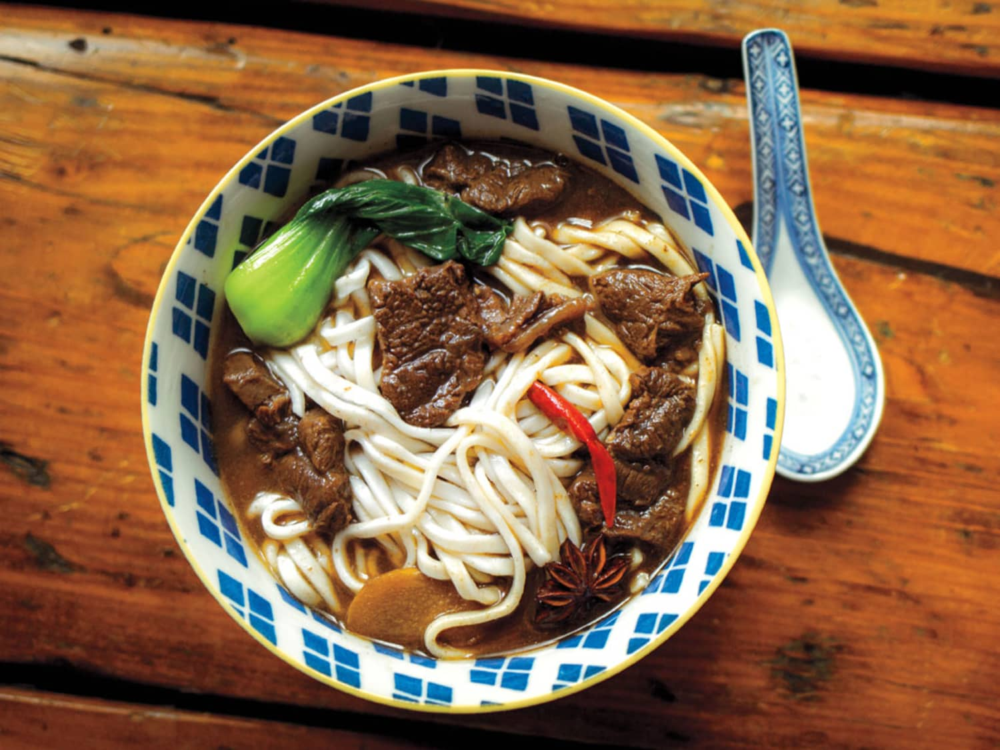

Beef Noodles

Delicious Taiwanese Beef Noodles
Beef noodle soup is a noodle soup made of stewed or braised beef, beef broth, vegetables and noodles. It exists in various forms throughout East and Southeast Asia.
One of the oldest beef noodle soups is the Lanzhou lamian (兰州拉面) or Lanzhou beef noodle soup which was created by the Hui people of northwest China during the Tang dynasty. There are numerous beef noodle soups available in China with a higher variety in the west than the east.
Ingredients
- 2 pounds beef stew meat
- 2 pounds noodles of your choice
- 2 to 3 tablespoons vegetable oil
- 6 slices of peeled fresh ginger
- 6 garlic cloves, smashed
- 2 medium scallions, trimmed and chopped
- 2 to 3 small fresh red chilies
- 1 large plum tomato
- 2 tablespoons granulated sugar
- 1 cup Shaoxing rice wine
- 1/2 cup light soy sauce
- 1/4 cup dark soy sauce
- 2 1/2 quarts water
- 1 tablespoon Sichuan peppercorns
- 1/2 teaspoon five-spice powder
- 8 small heads baby bok choy
Steps
- Heat 1 tablespoon of the oil in a large soup pot or Dutch oven over medium-high heat. Once hot, add as much of the beef as will fit on the bottom of the pan without too much overlap (you will need to work in batches). Cook, flipping with tongs, until both sides are gently browned, 5 to 6 minutes total. Repeat with the remaining beef, adding more oil as needed. Transfer the meat to a dish and set aside.
- Heat another tablespoon of the oil in the same pot until just hot. Add the ginger, garlic, scallions, chilies, and tomato. Cook, stirring occasionally, until very fragrant and the vegetables are softened, 3 to 4 minutes. Stir in the sugar and cook until dissolved and the mixture is bubbling. Return the beef to the pan and stir in the chili bean sauce.
- Stir in the rice wine and bring to a boil, scraping the bottom of the pot to release any browned bits. Let boil for a minute, then add the light and dark soy sauces, the water, peppercorns, five-spice powder, and star anise. Bring just to a boil and then reduce to a low simmer. Skim the scum that rises to the top of the pot with a slotted spoon. Cover and cook at a low simmer for at least 2 hours, preferably 3 hours.
- Cook the noodles according to the package instructions. Divide among individual serving bowls. Ladle the soup into each bowl with chunks of the beef, top with scallions and the blanched green vegetables, if using, and serve.